vignettes/EnrichedHeatmap.Rmd
EnrichedHeatmap.RmdMake Enriched Heatmaps
Author: Zuguang Gu ( z.gu@dkfz.de )
Date: 2019-09-29
Enriched heatmap is a special type of heatmap which visualizes the enrichment of genomic signals over specific target regions. It is broadly used to visualize e.g. how histone modifications are enriched at transcription start sites.
There are already several tools that are able to make such heatmap (e.g. ngs.plot, deepTools or genomation). Here we implement enriched heatmap by ComplexHeatmap package. Since the enriched heatmap is essentially a normal heatmap but with some special settings, with the functionality of ComplexHeatmap, it would be much easier to customize the heatmaps as well as concatenating to a list of heatmaps to show correspondance between different data sources.
Basic usages
library(EnrichedHeatmap)First let’s load the example dataset that we will use for demonstration. The data for human lung tissue is from Roadmap dataset.
set.seed(123)
load(system.file("extdata", "chr21_test_data.RData", package = "EnrichedHeatmap"))
ls()## [1] "cgi" "genes" "H3K4me3" "meth" "rpkm"There are following R objects:
-
H3K4me3: coverage for H3K4me3 histone modification from the ChIP-seq data, -
cgi: CpG islands, -
genes: genes, -
meth: methylation for CpG sites from WGBS, -
rpkm: gene expression from RNASeq.
In order to build the vignette fast, the data only includes chromosome 21. Also we downsampled 100000 CpG sites for methylation data.
We first visualize how H3K4me3 histone modification is enriched around gene TSS. We extract TSS of genes (note tss has strand information):
tss = promoters(genes, upstream = 0, downstream = 1)
tss[1:5]## GRanges object with 5 ranges and 0 metadata columns:
## seqnames ranges strand
## <Rle> <IRanges> <Rle>
## ENSG00000141956.9 chr21 43299591 -
## ENSG00000141959.12 chr21 45719934 +
## ENSG00000142149.4 chr21 33245628 +
## ENSG00000142156.10 chr21 47401651 +
## ENSG00000142166.8 chr21 34696734 +
## -------
## seqinfo: 1 sequence from an unspecified genome; no seqlengthsH3K4me3[1:5]## GRanges object with 5 ranges and 1 metadata column:
## seqnames ranges strand | coverage
## <Rle> <IRanges> <Rle> | <integer>
## [1] chr21 9825468-9825470 * | 10
## [2] chr21 9825471-9825488 * | 13
## [3] chr21 9825489 * | 12
## [4] chr21 9825490 * | 13
## [5] chr21 9825491-9825493 * | 14
## -------
## seqinfo: 1 sequence from an unspecified genome; no seqlengthsSimilar as other tools, the task of visualization are separated into two steps:
- get association between genomic signals and targets by normalizing into a matrix.
- visualize the matrix by heatmap.
mat1 = normalizeToMatrix(H3K4me3, tss, value_column = "coverage",
extend = 5000, mean_mode = "w0", w = 50)
mat1## Normalize H3K4me3 to tss:
## Upstream 5000 bp (100 windows)
## Downstream 5000 bp (100 windows)
## Include target regions (width = 1)
## 720 target regionsclass(mat1)## [1] "normalizedMatrix" "matrix"normalizeToMatrix() converts the association between genomic signals (H3K4me3) and targets(tss) into a matrix (actually mat1 is just a normal matrix with several additional attributes). It first splits the extended targets regions (the extension to upstream and downstream is controlled by extend argument) into a list of small windows (the width of the windows is controlled by w), then overlaps genomic signals to these small windows and calculates the value for every small window which is the mean value of genomic signals that intersects with the window (the value corresponds to genomic signals are controlled by value_column and how to calcualte the mean value is controlled by mean_mode.).
There are several modes for mean_mode according to different types of genomic signals. It will be explained in later sections.
With mat1, we can visualize it as a heatmap:
EnrichedHeatmap(mat1, name = "H3K4me3")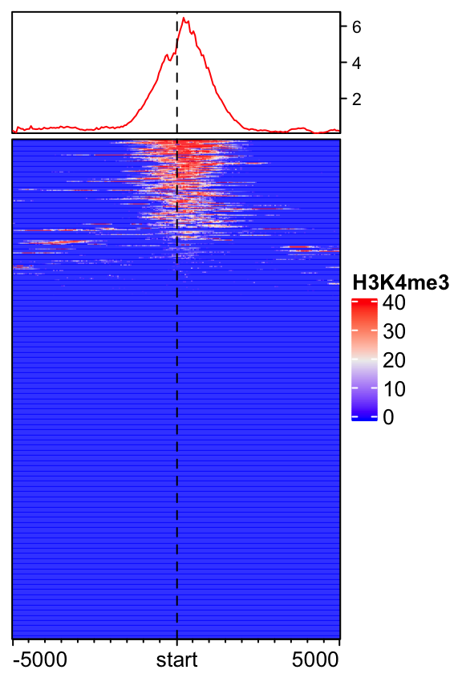
By default, rows are ordered according to the enrichment to the target regions. On top of the heatmap there is a specific type of annotation which summarize the enrichment patterns as a line plot, implemented b anno_enriched().
EnrichedHeatmap() internally calls Heatmap() and returns a Heatmap class object, so parameters for Heatmap() can be directly applied to EnrichedHeatmap(). Users can go to the ComplexHeatmap package to get a more comprehensive help.
Colors
Similar as the normal heatmap, the simplest way to set colors is to provide a vector of colors.
EnrichedHeatmap(mat1, col = c("white", "red"), name = "H3K4me3")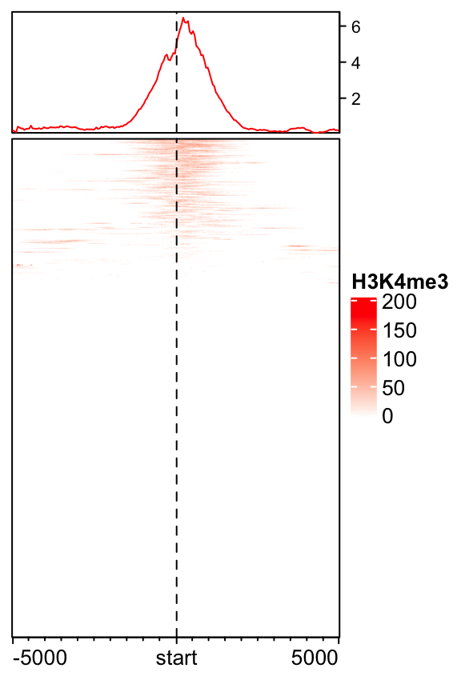
You may wonder why the color looks so light. The reason is in coverage values in H3K4me3, there exist some extreme values, which results in extreme value in mat1.
## 0% 25% 50% 75% 99% 100%
## 10 18 29 43 87 293## 0% 25% 50% 75% 99% 100%
## 0.00000 0.00000 0.00000 0.00000 38.92176 174.78000If a vector of colors is specified, sequential values from minimal to maximal are mapped to the colors, and other values are linearly interpolated. To get rid of such extreme values, there are two ways. The first is to specify keep option which trims extreme values both at lower and upper bounds. (In following, it means only to trim values larger than 99th percentile.)
mat1_trim = normalizeToMatrix(H3K4me3, tss, value_column = "coverage",
extend = 5000, mean_mode = "w0", w = 50, keep = c(0, 0.99))
EnrichedHeatmap(mat1_trim, col = c("white", "red"), name = "H3K4me3")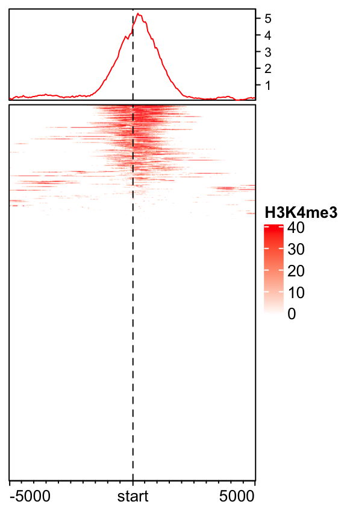
The second way is to define a color mapping function which only maps colors to values less than 99th percentile and the value larger than the 99th percentile uses same color as the 99th percentile.
library(circlize)
col_fun = colorRamp2(quantile(mat1, c(0, 0.99)), c("white", "red"))
EnrichedHeatmap(mat1, col = col_fun, name = "H3K4me3")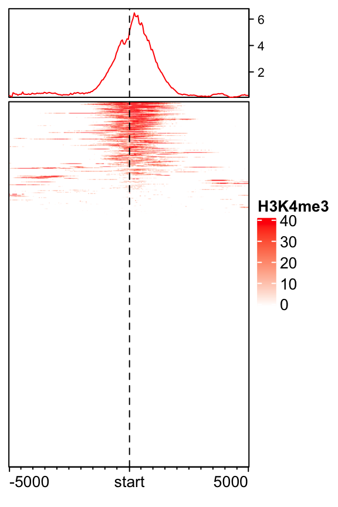
To sum it up, the first way directly modified values in mat1 while the second way keeps the original values but uses a robust color mapping.
If col is not specified in EnrichedHeatmap(), blue-white-red is mapped to 1st quantile, mean and 99th quantile by default.
In following sections, we will also use the matrix to do row-clustering, thus we directly use the trimmed matrix.
mat1 = mat1_trimSplit on rows
Split rows by a vector or a data frame by specifying row_split option.
EnrichedHeatmap(mat1, col = col_fun, name = "H3K4me3",
row_split = sample(c("A", "B"), length(genes), replace = TRUE),
column_title = "Enrichment of H3K4me3") 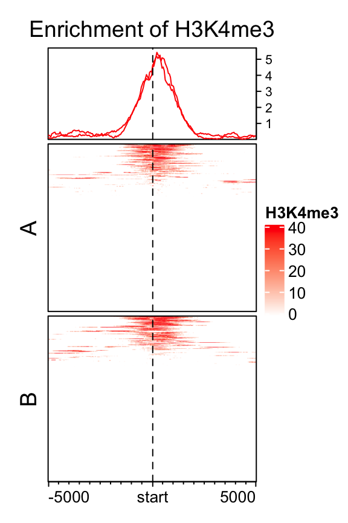
Split rows by k-means clustering by specifying row_km option.
set.seed(123)
EnrichedHeatmap(mat1, col = col_fun, name = "H3K4me3", row_km = 3,
column_title = "Enrichment of H3K4me3", row_title_rot = 0)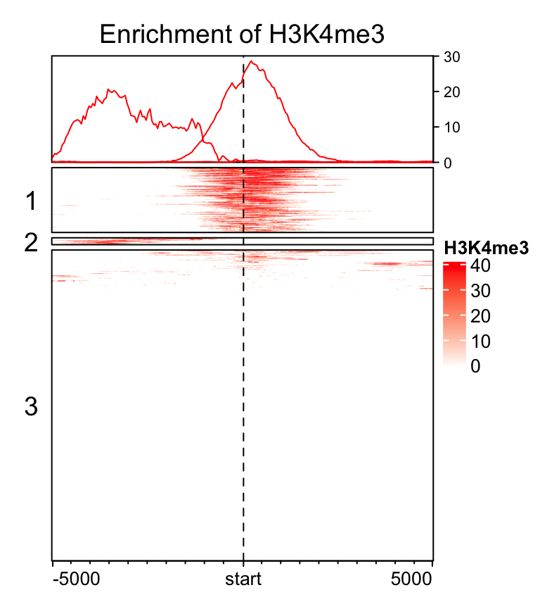
In each row cluster, rows are still ordered by the enrichment.
When rows are split, graphic parameters for the enriched annotation can be a vector with length as the number of row clusters.
set.seed(123)
EnrichedHeatmap(mat1, col = col_fun, name = "H3K4me3", row_km = 3,
top_annotation = HeatmapAnnotation(enriched = anno_enriched(gp = gpar(col = 2:4, lty = 1:3))),
column_title = "Enrichment of H3K4me3", row_title_rot = 0)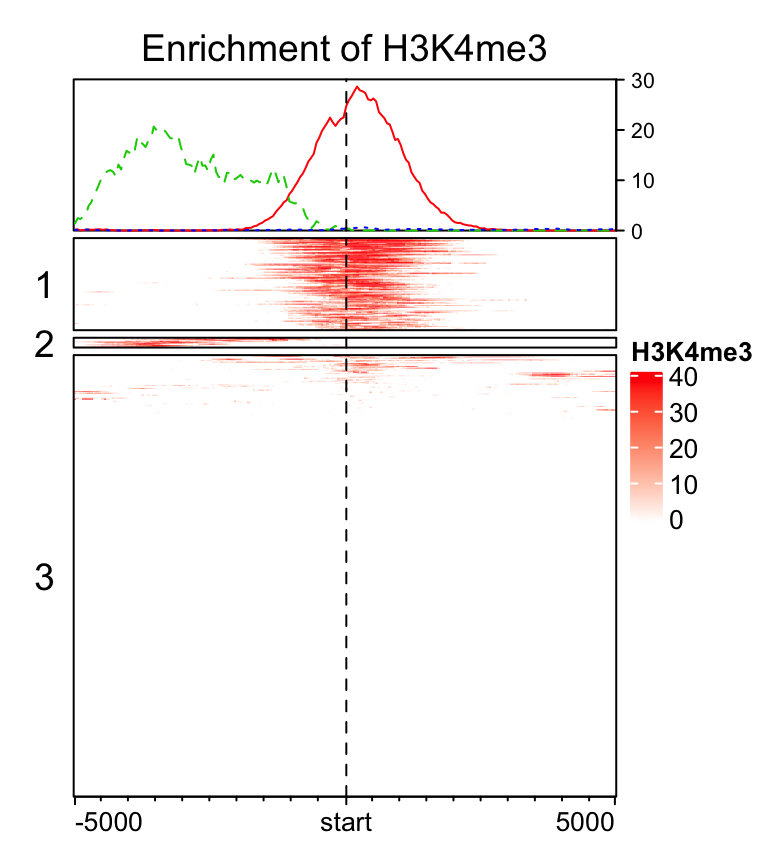
Users can go to https://jokergoo.github.io/ComplexHeatmap-reference/book/a-single-heatmap.html#heatmap-split for more controls of splitting heatmaps.
Cluster on rows
Cluster on rows. By default show_row_dend is turned off, so you don’t need to specify it here. More options for row clustering can be found in the help page of Heatmap() or https://jokergoo.github.io/ComplexHeatmap-reference/book/a-single-heatmap.html#clustering.
EnrichedHeatmap(mat1, col = col_fun, name = "H3K4me3",
cluster_rows = TRUE, column_title = "Enrichment of H3K4me3") 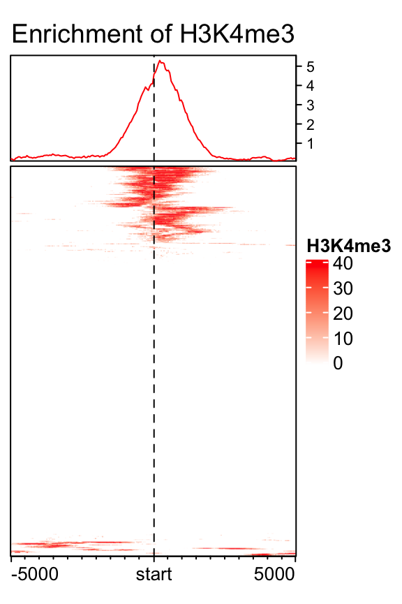
Vignette row_ordering.html compares different row ordering methods and clustering methods, and discusses which might be the proper way to show the enrichment patterns.
Extensions to target regions
Extension to upstream and downstream can be controled by extend either by a single value or a vector of length 2.
# upstream 1kb, downstream 2kb
mat12 = normalizeToMatrix(H3K4me3, tss, value_column = "coverage",
extend = c(1000, 2000), mean_mode = "w0", w = 50)
EnrichedHeatmap(mat12, name = "H3K4me3", col = col_fun)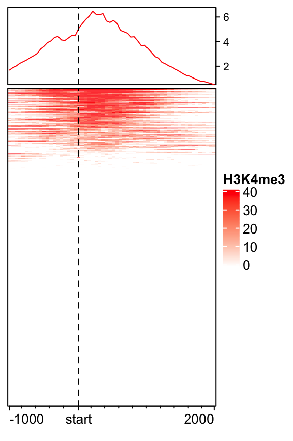
Either upstream or downstream can be set to 0.
mat12 = normalizeToMatrix(H3K4me3, tss, value_column = "coverage",
extend = c(0, 2000), mean_mode = "w0", w = 50)
EnrichedHeatmap(mat12, name = "H3K4me3", col = col_fun)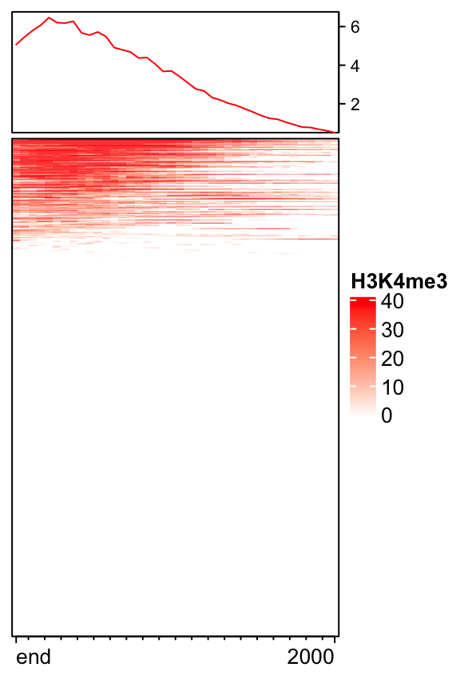
mat12 = normalizeToMatrix(H3K4me3, tss, value_column = "coverage",
extend = c(1000, 0), mean_mode = "w0", w = 50)
EnrichedHeatmap(mat12, name = "H3K4me3", col = col_fun)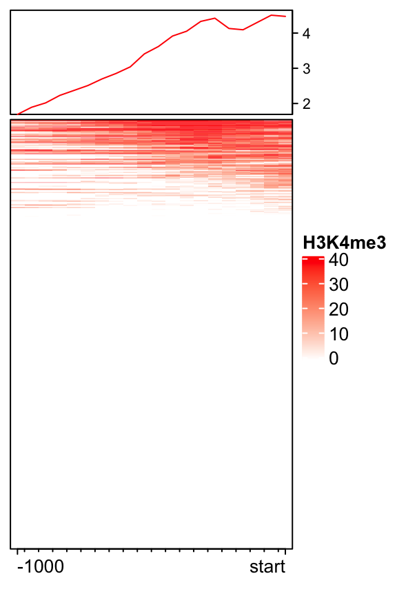
Sometimes whether the signals are on the upstream or the downstream of the targets are not important and users only want to show the relative distance to targets. If flip_upstream is set to TRUE, the upstream part in the normalized matrix is flipped and added to the downstream part. The flipping is only allowed when the targets are single-point targets or the targets are excluded in the normalized matrix (by setting include_target = FALSE). If the extension for the upstream and downstream is not equal, the smaller extension is used for the final matrix.
mat_f = normalizeToMatrix(H3K4me3, tss, value_column = "coverage",
extend = 5000, mean_mode = "w0", w = 50, flip_upstream = TRUE)
mat_f## Normalize H3K4me3 to tss:
## Extension 5000 bp (100 window)
## upstream is flipped to downstream.
## Include target regions (width = 1)
## 720 target regionsEnrichedHeatmap(mat_f, name = "H3K4me3", col = col_fun)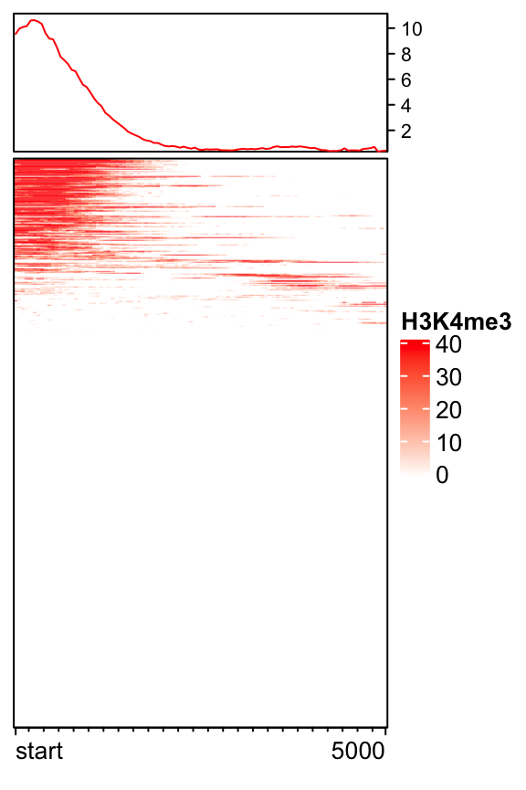
Axis of the enriched annotation
Axis of the enriched annotation is controlled by axis_param in anno_enriched(). All the parameters that can be set can be found in ComplexHeatmap::default_axis_param().
EnrichedHeatmap(mat1, col = col_fun, name = "H3K4me3",
top_annotation = HeatmapAnnotation(
enriched = anno_enriched(
ylim = c(0, 10),
axis_param = list(
at = c(0, 5, 10),
labels = c("zero", "five", "ten"),
side = "left",
facing = "outside"
)))
) 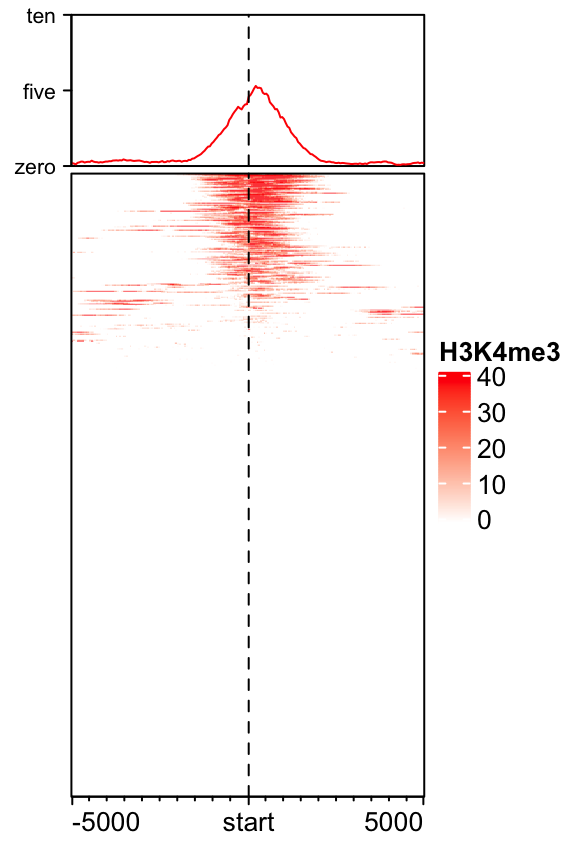
Mean mode
When normalizing genomic signals to target regions, upstream and downstream (also target regions themselves if they are included) of the targets are split into small windows. Then genomic signals are overlapped to each window and mean signal for each window is calculated. When a window is not completely covered by the regions for the genomic signales, proper averaging method should be applied to summarize the value in the window.
Depending on different scenarios, EnrichedHeatmap provides three metrics for averaging.
The overlapping model is illustrated in the following plot. The red line in the bottom represents the small window. Black lines on the top are the regions for genomic signals that overlap with the window. The thick lines indicate the intersected part between the signal regions and the window.
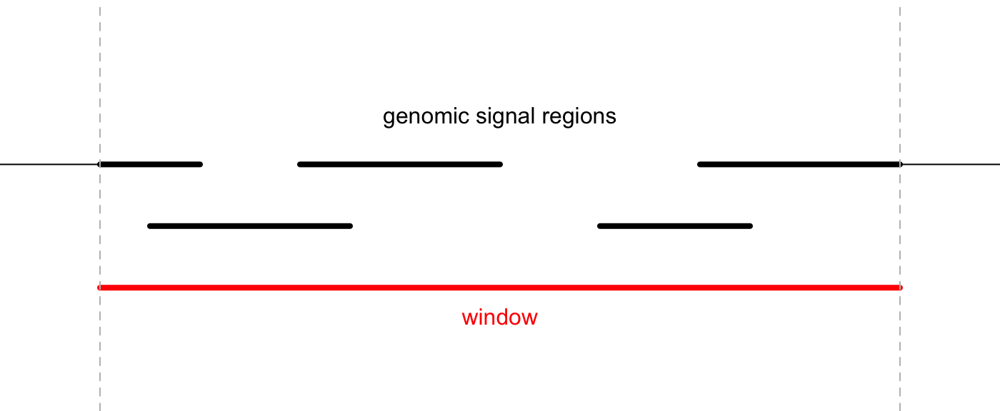
For a given window, \(n\) is the number of signal regions which overlap with the window (it is 5 in the above plot), \(w_i\) is the width of the intersected segments (black thick lines), and \(x_i\) is the signal value associated with the original regions. If there is no value associated with the signal regions, \(x_i = 1\) by default.
The “absolute” method is denoted as \(v_a\) and is simply calculated as the mean of all signal regions regardless of their width:
\[ v_a = \frac{\sum_i^n{x_i}}{n} \]
The “weighted” method is denoted as \(v_w\) and is calculated as the mean of all signal regions weighted by the width of their intersections:
\[ v_w = \frac{\sum_i^n{x_iw_i}}{\sum_i^n{w_i}} \]
“Absolute” and “weighted” methods should be applied when background values should not be taken into consideration. For example, when summarizing the mean methylation in a small window, non-CpG background should be ignored, because methylation is only associated with CpG sites and not with other positions.
The “w0” method is the weighted mean between the intersected parts and un-intersected parts:
\[ v_{w0} = \frac{v_wW}{W+W'} \]
\(W\) is sum of width of the intersected parts (\(\sum_i^n{w_i}\)) and \(W'\) is the sum of width for the non-intersected parts.
The “coverage” method is denoted as \(v_c\) and is defined as the mean signal averged by the length of the window:
\[ v_c = \frac{\sum_i^n{x_iw_i}}{L} \]
where \(L\) is the length of the window itself. Note when \(x_i = 1\), \(v_c\) is the mean coverage for the signal regions overlapped in the window.
Following illustrates different settings for mean_mode (note there is a signal region overlapping with other signal regions):
40 50 20 values in signal regions
++++++ +++ +++++ signal regions
30 values in signal regions
++++++ signal regions
================= window (17bp), there are 4bp not overlapping to any signal region.
4 6 3 3 overlap
absolute: (40 + 30 + 50 + 20)/4
weighted: (40*4 + 30*6 + 50*3 + 20*3)/(4 + 6 + 3 + 3)
w0: (40*4 + 30*6 + 50*3 + 20*3)/(4 + 6 + 3 + 3 + 4)
coverage: (40*4 + 30*6 + 50*3 + 20*3)/17Smoothing
Rows can be smoothed by setting smooth to TRUE when generating the matrix. Later we will demonstrate smoothing can also help to impute NA values.
As smoothing may change the original data range, the color mapping function col_fun here ensures that the color palette is still the same as the unsmoothed one.
background corresponds to the regions that have no signal overlapped. The proper value depends on specific scenarios. Here since we visualize coverage from ChIP-Seq data, it is reasonable to assign 0 to regions with no H3K4me3 signal.
In following example, since a enriched heatmap is also a heatmap, we can concatenate two heamtaps by +.
mat1_smoothed = normalizeToMatrix(H3K4me3, tss, value_column = "coverage",
extend = 5000, mean_mode = "w0", w = 50, background = 0, smooth = TRUE)
EnrichedHeatmap(mat1_smoothed, col = col_fun, name = "H3K4me3_smoothed",
column_title = "smoothed") +
EnrichedHeatmap(mat1, col = col_fun, name = "H3K4me3", column_title = "unsmoothed")
In above plots, you might feel the left heatmap is better than the right unsmoothed heatmap. In following, we will demonstrate smoothing can significantly improve the enrichment pattern for methylation datasets.
Following heatmap visualizes the enrichment of low methylated regions over TSS. The grey colors represent the windows with no CpG sites (note we set NA to background and grey is the default color for NA values by ComplexHeatmap).
meth[1:5]## GRanges object with 5 ranges and 1 metadata column:
## seqnames ranges strand | meth
## <Rle> <IRanges> <Rle> | <numeric>
## [1] chr21 9432427 * | 0.267104203931852
## [2] chr21 9432428 * | 0.267106771955287
## [3] chr21 9432964 * | 0.272709911227985
## [4] chr21 9432965 * | 0.2727345344132
## [5] chr21 9433315 * | 0.285114797969136
## -------
## seqinfo: 1 sequence from an unspecified genome; no seqlengthsmat2 = normalizeToMatrix(meth, tss, value_column = "meth", mean_mode = "absolute",
extend = 5000, w = 50, background = NA)
meth_col_fun = colorRamp2(c(0, 0.5, 1), c("blue", "white", "red"))
EnrichedHeatmap(mat2, col = meth_col_fun, name = "methylation", column_title = "methylation near TSS")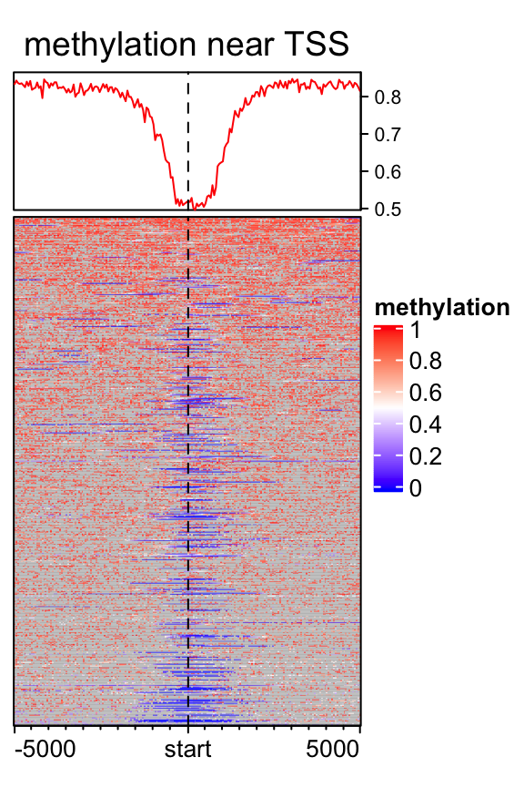
When overlapping CpG positions to segmented target regions, it is possible that there is no CpG sites in some windows, especially for meth which only contains 100000 CpG sites which are randomly sampled in chromosome 21. The values for these windows which contain no CpG sites can be imputed by smoothing. Although it seems not proper to assign methylation values to non- CpG windows, but it will improve the visualization a lot.
mat2 = normalizeToMatrix(meth, tss, value_column = "meth", mean_mode = "absolute",
extend = 5000, w = 50, background = NA, smooth = TRUE)
EnrichedHeatmap(mat2, col = meth_col_fun, name = "methylation", column_title = "methylation near TSS")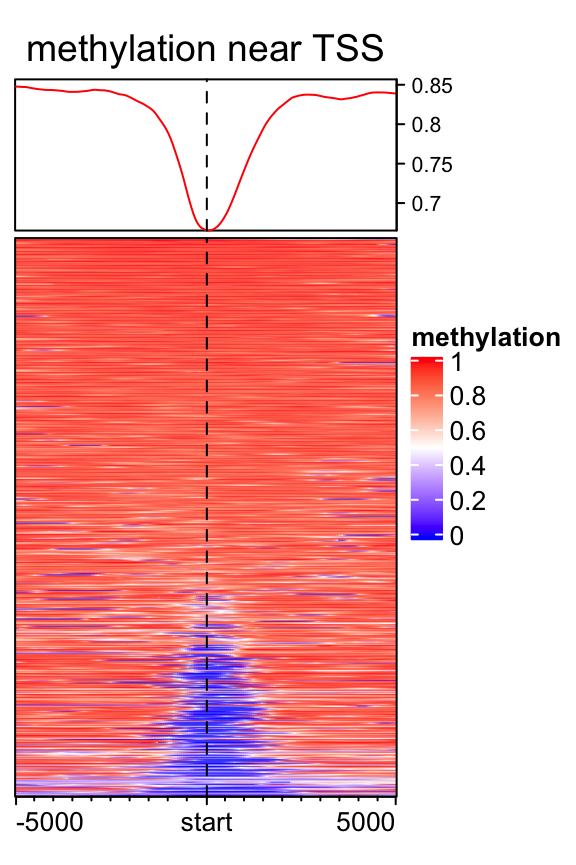
To do the smoothing, by default, locfit() is first applied to each row in the original matrix. If it is failed, loess() smoothing is applied afterwards. If both smoothing methods are failed, there will be a warning and the original value is kept.
Users can provides their own smoothing function by smooth_fun argument. This self-defined function accepts a numeric vector (may contains NA values) and returns a vector with same length. If the smoothing is failed, the function should call stop() to throw errors so that normalizeToMatrix() can catch how many rows are failed in smoothing. Take a look at the source code of default_smooth_fun() to get an example.
Targets are regions
In the example of H3K4me3, the target regions are single points. The targets can also be regions with width larger than 1. Following heatmap visualizes the enrichment of low methylation on CpG islands:
mat3 = normalizeToMatrix(meth, cgi, value_column = "meth", mean_mode = "absolute",
extend = 5000, w = 50, background = NA, smooth = TRUE, target_ratio = 0.3)
EnrichedHeatmap(mat3, col = meth_col_fun, name = "methylation", axis_name_rot = 90,
column_title = "methylation near CGI")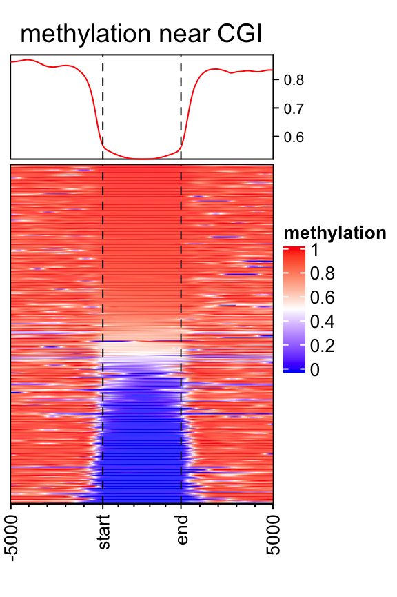
Width of the target regions shown on heatmap can be controlled by target_ratio which is relative to the width of the complete heatmap.
Target regions are also splitted into small windows. Due to the unequal width of target regions, each target is split into \(k\) equal windows with \(k = (n_1 +n_2)*r/(1-r)\) where \(n_1\) is the number of upstream windows, \(n_2\) is the number of downstream windows and \(r\) is the ratio of target columns presented in the matrix. There is a k argument in normalizeToMatrix(), but it is only used when there is no upstream nor downstream for the targets.
When genomic targets are regions, upstream and/or downstream can be excluded in the heatmap.
mat3 = normalizeToMatrix(meth, cgi, value_column = "meth", mean_mode = "absolute",
extend = c(0, 5000), w = 50, background = NA, smooth = TRUE, target_ratio = 0.5)
EnrichedHeatmap(mat3, col = meth_col_fun, name = "methylation",
column_title = "methylation near CGI")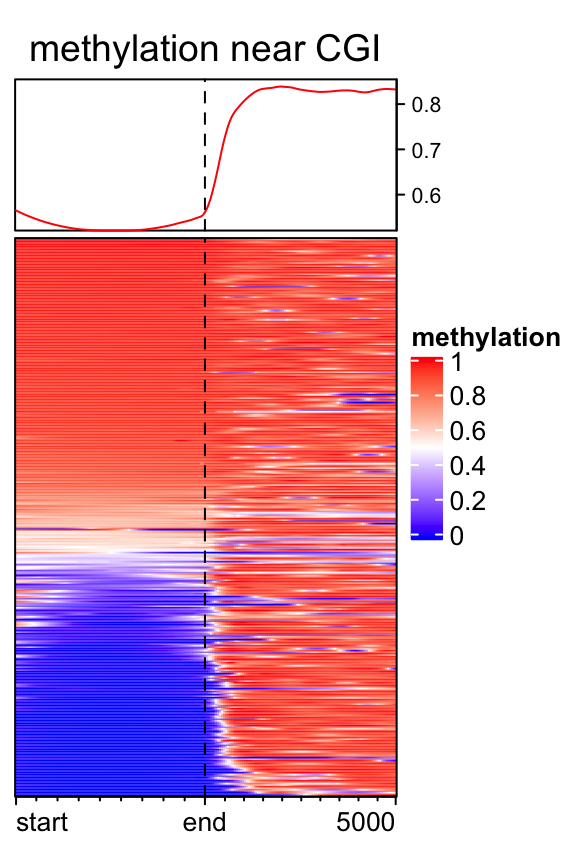
mat3 = normalizeToMatrix(meth, cgi, value_column = "meth", mean_mode = "absolute",
extend = c(5000, 0), w = 50, background = NA, smooth = TRUE, target_ratio = 0.5)## Warning: Smoothing is failed for one row because there are very few signals overlapped to it.
## Please use `failed_rows(mat)` to get the index of the failed row and consider to remove
## it.EnrichedHeatmap(mat3, col = meth_col_fun, name = "methylation",
column_title = "methylation near CGI")
When there is no upstream nor downstream, the number of columns in the heatmap is controlled by k argument.
mat3 = normalizeToMatrix(meth, cgi, value_column = "meth", mean_mode = "absolute",
extend = 0, k = 20, background = NA, smooth = TRUE, target_ratio = 1)## Warning: Smoothing is failed for one row because there are very few signals overlapped to it.
## Please use `failed_rows(mat)` to get the index of the failed row and consider to remove
## it.EnrichedHeatmap(mat3, col = meth_col_fun, name = "methylation",
column_title = "methylation near CGI")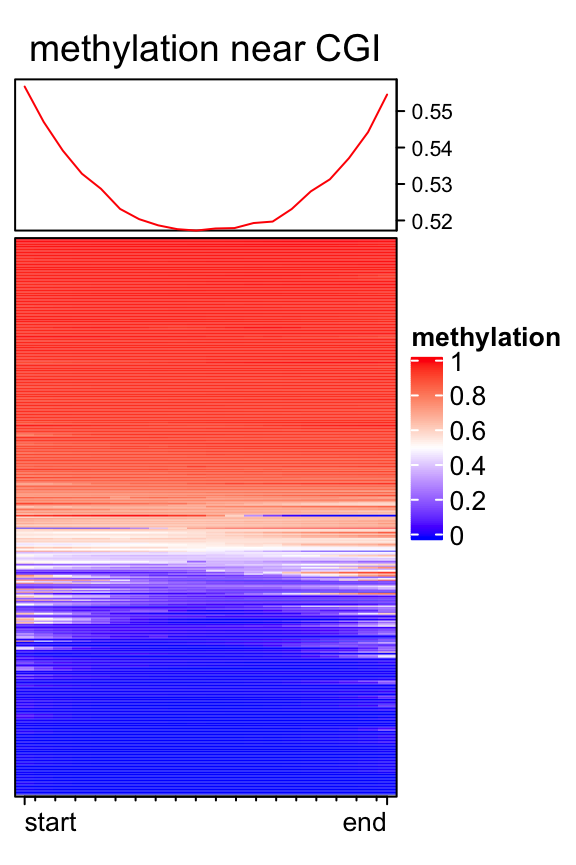
You may notice there are warnings when executing above code, that is because there are very few signals overlapped to some rows, which results too many NA values and failed with the smoothing. Corresponding index for failed rows can be get by :
failed_rows(mat3)## [1] 5and maybe you can remove this row in the matrix beforehand.
Multiple heatmaps
The power of EnrichedHeatmap package is that parallel heatmaps can be concatenated, both for enriched heatmap, normal heatmap as well the row annotations, which provides a very efficient way to visualize multiple sources of information.
With the functionality of ComplexHeatmap package, heatmaps can be concatenated by + operator. Heatmap objects and HeatmapAnnotation objects can be mixed.
Following heatmaps visualizes correspondance between H3K4me3 modification, methylation and gene expression. It is quite straightforward to see high expression correlates with low methylation and high H3K4me3 signal around TSS.
EnrichedHeatmap(mat1, col = col_fun, name = "H3K4me3",
top_annotation = HeatmapAnnotation(enrich = anno_enriched(axis_param = list(side = "left")))) +
EnrichedHeatmap(mat2, col = meth_col_fun, name = "methylation") +
Heatmap(log2(rpkm+1), col = c("white", "orange"), name = "log2(rpkm+1)",
show_row_names = FALSE, width = unit(5, "mm"))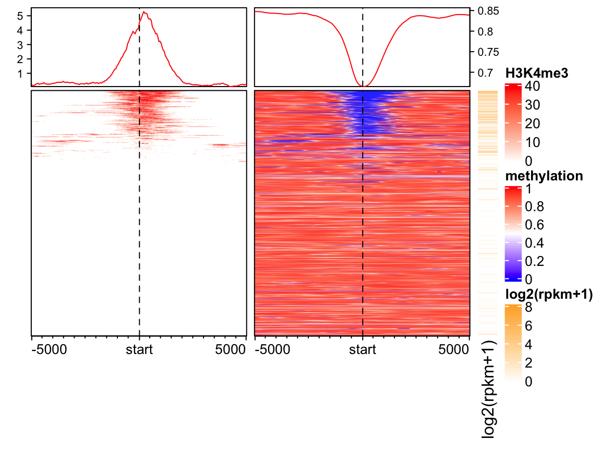
Of course you can split rows by partition variables or k-means clustering in the main heatmap. In following heatmaps, the most right color bar can be corresponded to the colors in column annotation on both histone modification heatmap and methylation heatmap.
Here we emphasize again, proper trimming on the matrix will greatly help to reveal the patterns. You can try replace mat1 to a un-trimmed matrix and see whether this patterns shown below still preserves.
partition = paste0("cluster", kmeans(mat1, centers = 3)$cluster)
lgd = Legend(at = c("cluster1", "cluster2", "cluster3"), title = "Clusters",
type = "lines", legend_gp = gpar(col = 2:4))
ht_list = Heatmap(partition, col = structure(2:4, names = paste0("cluster", 1:3)), name = "partition",
show_row_names = FALSE, width = unit(3, "mm")) +
EnrichedHeatmap(mat1, col = col_fun, name = "H3K4me3",
top_annotation = HeatmapAnnotation(lines = anno_enriched(gp = gpar(col = 2:4))),
column_title = "H3K4me3") +
EnrichedHeatmap(mat2, col = meth_col_fun, name = "methylation",
top_annotation = HeatmapAnnotation(lines = anno_enriched(gp = gpar(col = 2:4))),
column_title = "Methylation") +
Heatmap(log2(rpkm+1), col = c("white", "orange"), name = "log2(rpkm+1)",
show_row_names = FALSE, width = unit(15, "mm"),
top_annotation = HeatmapAnnotation(summary = anno_summary(gp = gpar(fill = 2:4),
outline = FALSE, axis_param = list(side = "right"))))
draw(ht_list, split = partition, annotation_legend_list = list(lgd),
ht_gap = unit(c(2, 8, 8), "mm"))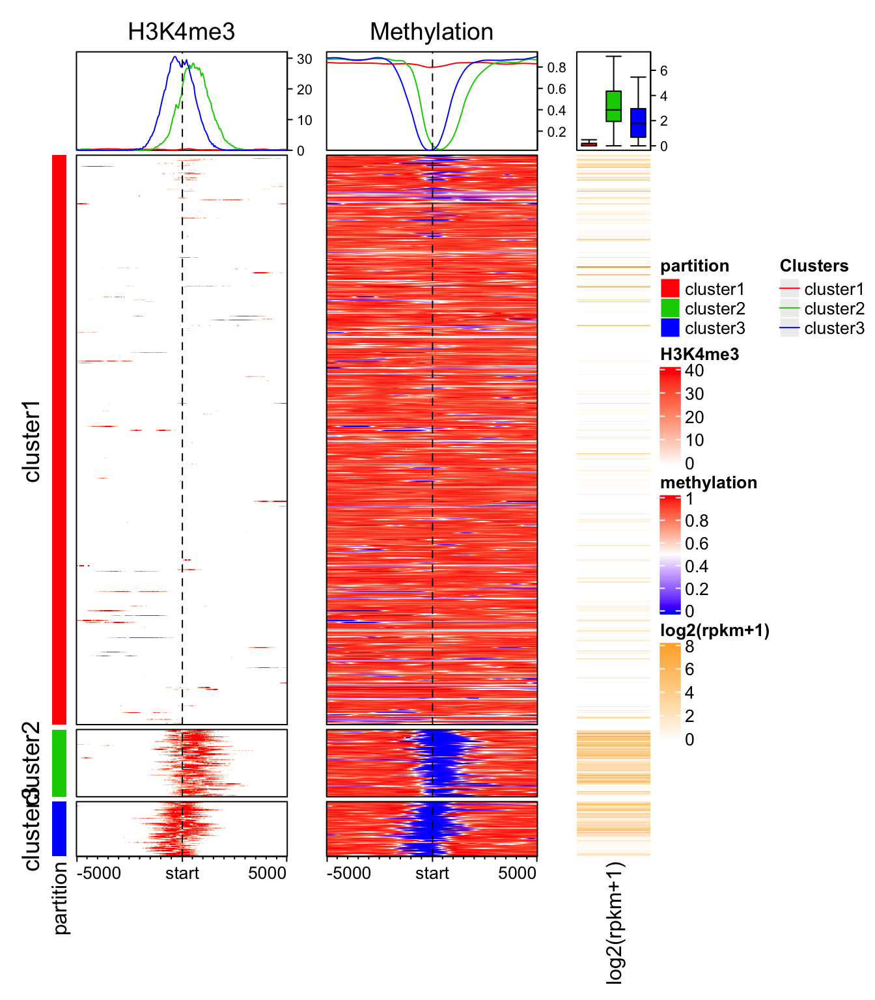
Visualize positive signals and negative signals separatedly
Sometimes we visualize the general correlation or the group difference around certain genomic targets. In this case, it makes more sense to visualize the enrichment for the positive signals and negative signals separatedly. In following example, variable mat_H3K4me1 contains correlation between H3K4me1 signal and gene expression in (-5kb, 10kb) of the gene TSS.
load(system.file("extdata", "H3K4me1_corr_normalize_to_tss.RData", package = "EnrichedHeatmap"))
mat_H3K4me1## Normalize to target:
## Upstream 5000 bp (100 windows)
## Downstream 10000 bp (200 windows)
## Include target regions (width = 1)
## 677 target regionsIn anno_enriched(), there are two non-standard parameters neg_col and pos_col for gp. If these two are set, the enrichment lines are drawn for the positive signals and negative signals in the matrix separatedly.
corr_col_fun = colorRamp2(c(-1, 0, 1), c("darkgreen", "white", "red"))
EnrichedHeatmap(mat_H3K4me1, col = corr_col_fun, name = "corr_H3K4me1",
top_annotation = HeatmapAnnotation(
enrich = anno_enriched(gp = gpar(neg_col = "darkgreen", pos_col = "red"),
axis_param = list(side = "left"))
), column_title = "separate neg and pos") +
EnrichedHeatmap(mat_H3K4me1, col = corr_col_fun, show_heatmap_legend = FALSE,
top_annotation = HeatmapAnnotation(enrich = anno_enriched(value = "abs_mean")),
column_title = "pool neg and pos")
Restrict overlapping by mappings
By default every genomic signal tries to intersect to every target region, but if mapping is provided, only those genomic signals that are mapped to the corresponding target region will be overlapped.
To illustrate it more clearly, we load the example data. gene column in neg_cr is used to map to the names of all_tss. In following example, neg_cr is the signal and all_tss is the target.
load(system.file("extdata", "neg_cr.RData", package = "EnrichedHeatmap"))
all_tss = promoters(all_genes, upstream = 0, downstream = 1)
all_tss = all_tss[unique(neg_cr$gene)]
neg_cr[1:2]## GRanges object with 2 ranges and 1 metadata column:
## seqnames ranges strand | gene
## <Rle> <IRanges> <Rle> | <character>
## [1] chr1 901460-902041 * | ENSG00000187583.5
## [2] chr1 1238870-1239998 * | ENSG00000131584.14
## -------
## seqinfo: 17 sequences from an unspecified genome; no seqlengthsall_tss[1:2]## GRanges object with 2 ranges and 0 metadata columns:
## seqnames ranges strand
## <Rle> <IRanges> <Rle>
## ENSG00000187583.5 chr1 901877 +
## ENSG00000131584.14 chr1 1244989 -
## -------
## seqinfo: 25 sequences (1 circular) from an unspecified genome; no seqlengthsIn this example, neg_cr contains regions that show negative correlation between methylation and expression for the genes. The negative correlated regions are detected as:
- extend gene to upstream 5kb and downtream 5kb;
- for every gene, use a sliding window to go through left to right and find correlated regions by looking at the correlation between methylation in the window and expression for the gene.
Since genes may be close to each other, it is possible that one correlated region for gene A overlaps with gene B, and actually we only want to overlap this correlated regions to gene A while not gene B. By specifying the mapping, we can correspond correlated regions to the correct genes.
mat_neg_cr = normalizeToMatrix(neg_cr, all_tss, mapping_column = "gene", w = 50, mean_mode = "w0")
EnrichedHeatmap(mat_neg_cr, col = c("white", "darkgreen"), name = "neg_cr", cluster_rows = TRUE,
top_annotation = HeatmapAnnotation(lines = anno_enriched(gp = gpar(col = "darkgreen"))))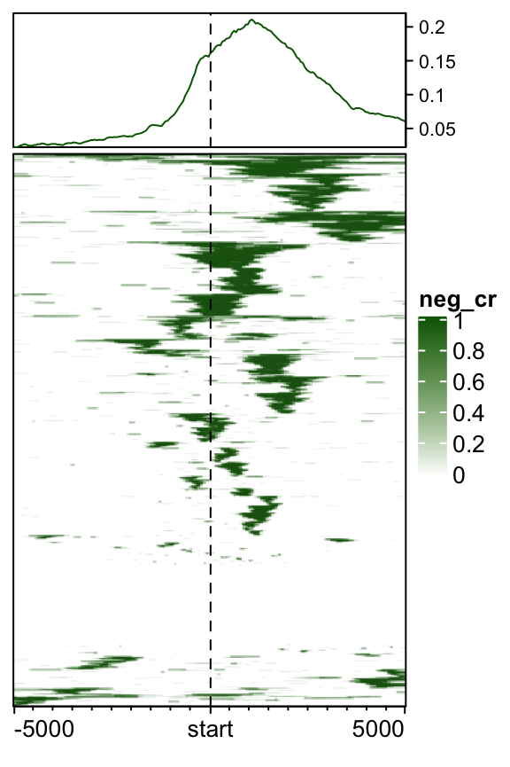
Similarly we can visualize the distribution of transcript to gene TSS. Since there are already connections between transcripts and their host genes, we need to provide this information when normalizing into the matrix.
mat_tx = normalizeToMatrix(tx, all_tss, mapping_column="gene", extend = c(5000, 10000), w = 50,
mean_mode = "coverage", keep = c(0, 0.99))
EnrichedHeatmap(mat_tx, col = c("white", "black"), name = "tx_coverage", cluster_rows = TRUE,
top_annotation = HeatmapAnnotation(lines2 = anno_enriched(gp = gpar(col = "black"))))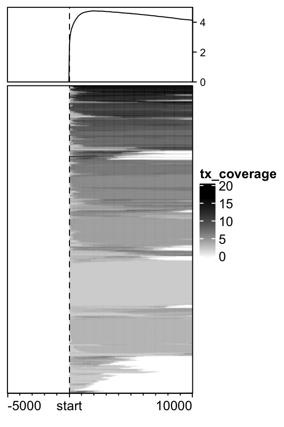
Features coming from ComplexHeatmap package
Since EnrichedHeatmap is built upon the ComplexHeatmap package, features in ComplexHeatmap can be used directly for EnrichedHeatmap. As shown before, heatmaps can be split either by row_km or row_spilt arguments.
The order of rows can be retrieved by row_order().
# code not run
ht_list = draw(ht_list)
row_order(ht_list)Since EnrichedHeatmap and EnrichedHeamtapList class are inherited from Heamtap and HeamtapList class respectively, all advanced parameters in the latter two classes can be directly used in the former two classes.
E.g. to change graphic settings for the heatmap title:
# code not run
EnrichedHeatmap(..., column_title_gp = ...)To change graphic settings for legends:
# code not run
EnrichedHeatmap(..., heatmap_legend_param = ...)
# or set is globally
ht_opt(...)
EnrichedHeatmap(...)
ht_opt(RESET = TRUE)To set the width of the heatmaps if there are more than one heatmaps:
# code not run
EnrichedHeatmap(..., width = ...) + EnrichedHeatmap(...)For more advanced settings, please directly go to the vignettes in the ComplexHeamtap package.
Together with above features, you can make very complex heatmaps. Following example is from a real-world dataset and the details of making this plot can be found in this vigentte.

Summarize from a list of matrices
Let’s assume you have a list of histone modification signals for different samples and you want to visualize the mean pattern across samples. You can first normalize histone mark signals for each sample and then calculate means values across all samples. In following example code, hm_gr_list is a list of GRanges objects which contain positions of histone modifications, tss is a GRanges object containing positions of gene TSS.
# code not run
mat_list = NULL
for(i in seq_along(hm_gr_list)) {
mat_list[[i]] = normalizeToMatrix(hm_gr_list[[i]], tss, value_column = ...)
}If we compress the list of matrices as a three-dimension array where the first dimension corresponds to genes, the second dimension corresponds to windows and the third dimension corresponds to samples, the mean signal across all sample can be calculated on the third dimension. Here getSignalsFromList() simplifies this job.
Applying getSignalsFromList() to mat_list, it gives a new normalized matrix which contains mean signals across all samples and can be directly used in EnrichedHeatmap().
# code not run
mat_mean = getSignalsFromList(mat_list)
EnrichedHeatmap(mat_mean)The correlation between histone modification and gene expression can also be calculated on the third dimension of the array. In the user-defined function fun, x is the vector for gene i and window j in the array, and i is the index of current gene.
# code not run
mat_corr = getSignalsFromList(mat_list, fun = function(x, i) cor(x, expr[i, ], method = "spearman"))Then mat_corr here can be used to visualize how gene expression is correlated to histone modification around TSS.
# code not run
EnrichedHeatmap(mat_corr)Use your own matrix
normalizeToMatrix() is used to normalize the associations between genomic signals to the targets. The returned value is just a simple matrix but with several attributes attached. Sometimes, users may have their own way to generate such matrix. It is easy to add the addtional attributes and send to EnrichedHeamtap() for visualization.
Following four attributes should be attached. Basically they are used for making the axes and labels.
attr(mat, "upstream_index")
attr(mat, "target_index")
attr(mat, "downstream_index")
attr(mat, "extend")To taks as an example, in following code, mat2 is a simple matrix which only contains dim attributes. mat2 can be thought as a matrix obtained from other methods.
mat1 = normalizeToMatrix(H3K4me3, tss, value_column = "coverage",
extend = 5000, mean_mode = "w0", w = 50)
mat2 = mat1
attributes(mat2) = NULL
dim(mat2) = dim(mat1)
mat2[1:4, 1:4]## [,1] [,2] [,3] [,4]
## [1,] 0 0 0 0
## [2,] 0 0 0 0
## [3,] 0 0 0 0
## [4,] 0 0 0 0As we already know, in mat2, upstream is extended to 5kb by 50bp window, which means the first 100 columns correspond to the upstream. Similar the last 100 columns for downstream. Here the targets is TSS which can be thought as with no width. So we can set column index attributes for upstream, target and downstream as follows:
attr(mat2, "upstream_index") = 1:100
attr(mat2, "target_index") = integer(0)
attr(mat2, "downstream_index") = 101:200
attr(mat2, "extend") = c(5000, 5000) # it must be a vector of length twoAnd don’t forget to set mat2 to normalizedMatrix class. And now mat2 is a valid object for EnrichedHeamtap().
## Normalize to :
## Upstream 5000 bp (100 windows)
## Downstream 5000 bp (100 windows)
## Not include target regions
## 720 target regionsAbove four attributes are enough for making the heatmaps, there are several more attributes which can give better information when printing mat2.
## Normalize H3K4me3 to TSS:
## Upstream 5000 bp (100 windows)
## Downstream 5000 bp (100 windows)
## Not include target regions
## 720 target regionsTo make the conversion easier, users can directly use as.normalizedMatrix() for the conversion.
attributes(mat2) = NULL
dim(mat2) = dim(mat1)
as.normalizedMatrix(mat2,
k_upstream = 100,
k_downstream = 100,
k_target = 0,
extend = c(5000, 5000),
signal_name = "H3K4me3",
target_name = "TSS"
)## Normalize H3K4me3 to TSS:
## Upstream 5000 bp (100 windows)
## Downstream 5000 bp (100 windows)
## Not include target regions
## 720 target regionsIn as.normalizedMatrix(), you can also perform smoothing by specifying smooth and smooth_fun. Pleas check the documentation of this function.
Reduce the size of the plot
You can set use_raster to TRUE to replace the heatmap bodies with raster images. Check https://jokergoo.github.io/ComplexHeatmap-reference/book/a-single-heatmap.html#heatmap-as-raster-image.
# code not run
EnrichedHeatmap(mat, use_raster = TRUE, raster_device = ..., raster_device_param = ...)Error caused from smoothing
If you meet following error when doing smoothing in normalizeToMatrix():
Error: segfault from C stack overflowYou can either:
- remove target regions for which there are few signals overlapped to them;
- change to another
smooth_fun()or change parameters inlocfit().
For solution 1, you can first calculate the matrix without smoothing and calculate the percent of NA values in each row. Rows having high NA values can be removed.
# code not run
mat = normalizeToMatrix(..., smooth = FALSE)
# the percent of NA values in each row
apply(mat, 1, function(x) sum(is.na(x)/length(x)))Session info
## R version 3.6.1 (2019-07-05)
## Platform: x86_64-apple-darwin15.6.0 (64-bit)
## Running under: macOS Mojave 10.14.2
##
## Matrix products: default
## BLAS: /Library/Frameworks/R.framework/Versions/3.6/Resources/lib/libRblas.0.dylib
## LAPACK: /Library/Frameworks/R.framework/Versions/3.6/Resources/lib/libRlapack.dylib
##
## locale:
## [1] en_GB.UTF-8/en_GB.UTF-8/en_GB.UTF-8/C/en_GB.UTF-8/en_GB.UTF-8
##
## attached base packages:
## [1] parallel stats4 grid stats graphics grDevices utils datasets methods
## [10] base
##
## other attached packages:
## [1] EnrichedHeatmap_1.15.0 GenomicRanges_1.36.1 GenomeInfoDb_1.20.0 IRanges_2.18.2
## [5] S4Vectors_0.22.1 BiocGenerics_0.30.0 ComplexHeatmap_2.1.0 circlize_0.4.8
## [9] knitr_1.25 markdown_1.1
##
## loaded via a namespace (and not attached):
## [1] Rcpp_1.0.2 XVector_0.24.0 compiler_3.6.1 RColorBrewer_1.1-2
## [5] zlibbioc_1.30.0 bitops_1.0-6 tools_3.6.1 digest_0.6.21
## [9] lattice_0.20-38 evaluate_0.14 memoise_1.1.0 clue_0.3-57
## [13] png_0.1-7 rlang_0.4.0 pkgdown_1.4.1 xfun_0.9
## [17] GenomeInfoDbData_1.2.1 stringr_1.4.0 cluster_2.1.0 desc_1.2.0
## [21] GlobalOptions_0.1.0 fs_1.3.1 locfit_1.5-9.1 rprojroot_1.3-2
## [25] R6_2.4.0 GetoptLong_0.1.7 rmarkdown_1.15 magrittr_1.5
## [29] matrixStats_0.55.0 backports_1.1.4 htmltools_0.3.6 MASS_7.3-51.4
## [33] assertthat_0.2.1 shape_1.4.4 colorspace_1.4-1 stringi_1.4.3
## [37] RCurl_1.95-4.12 crayon_1.3.4 rjson_0.2.20